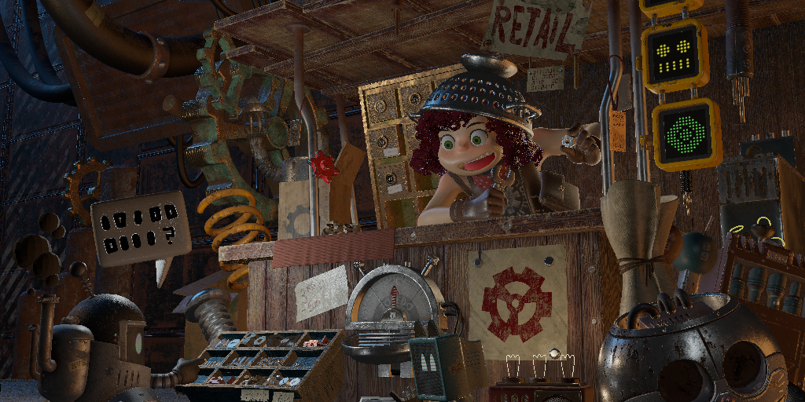
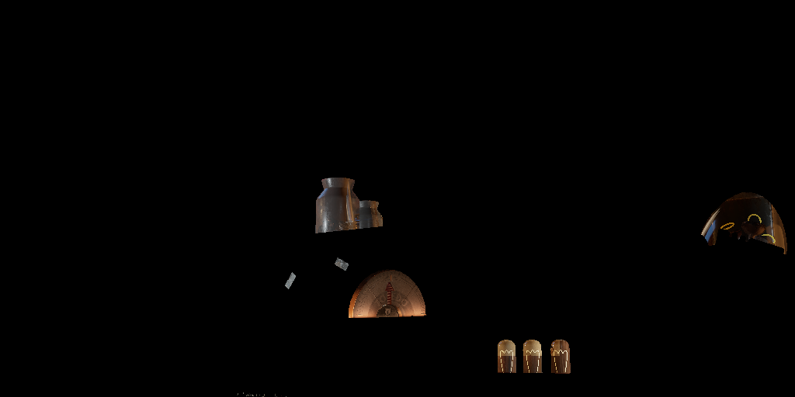
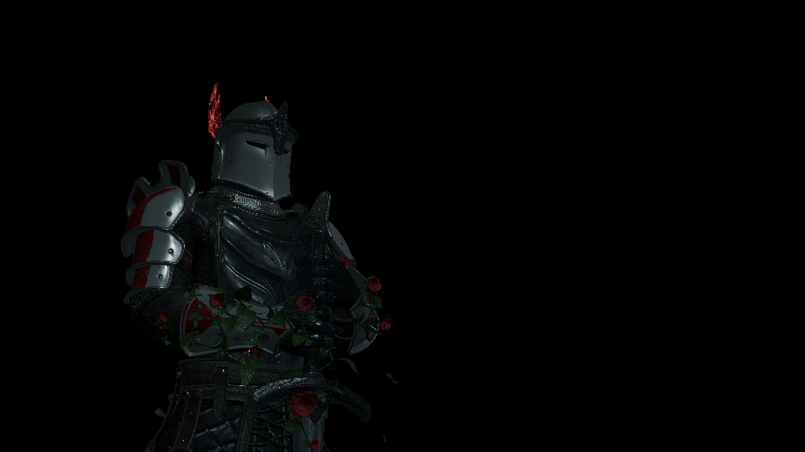
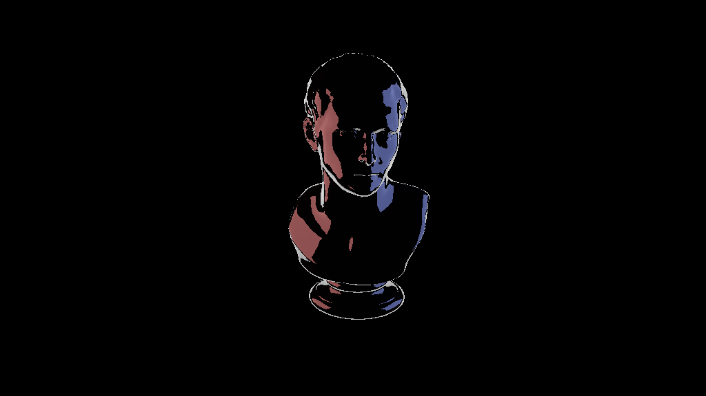
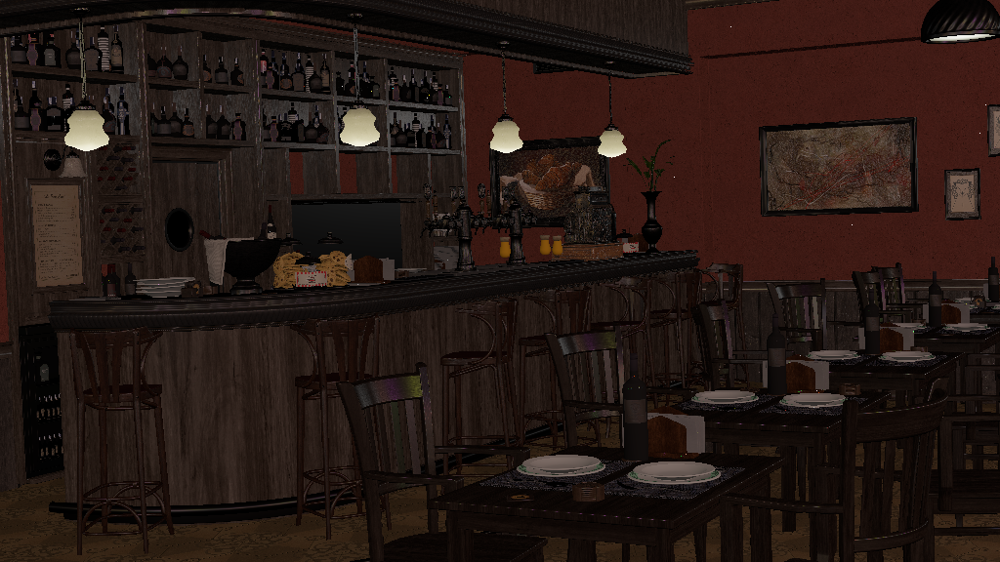
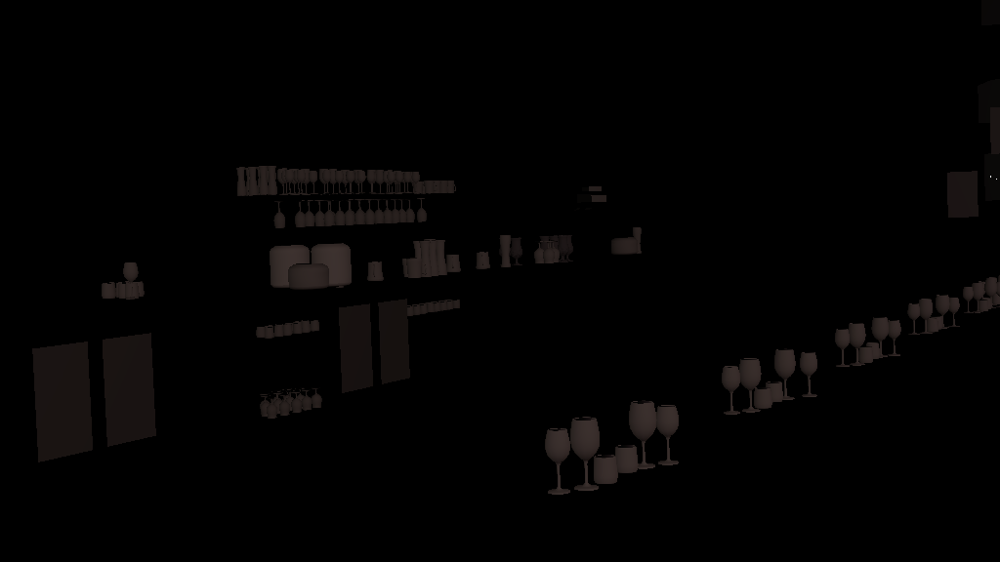
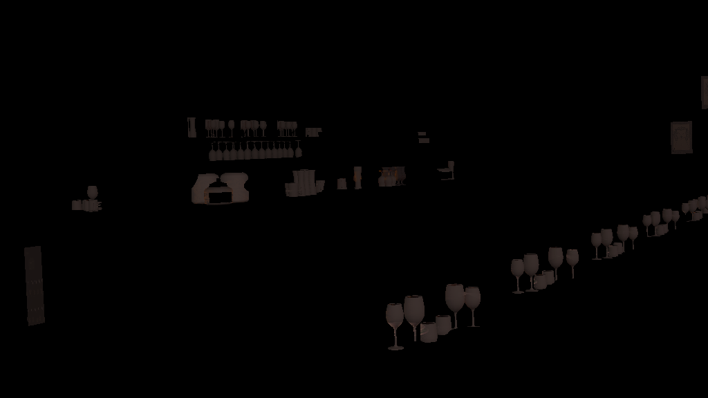
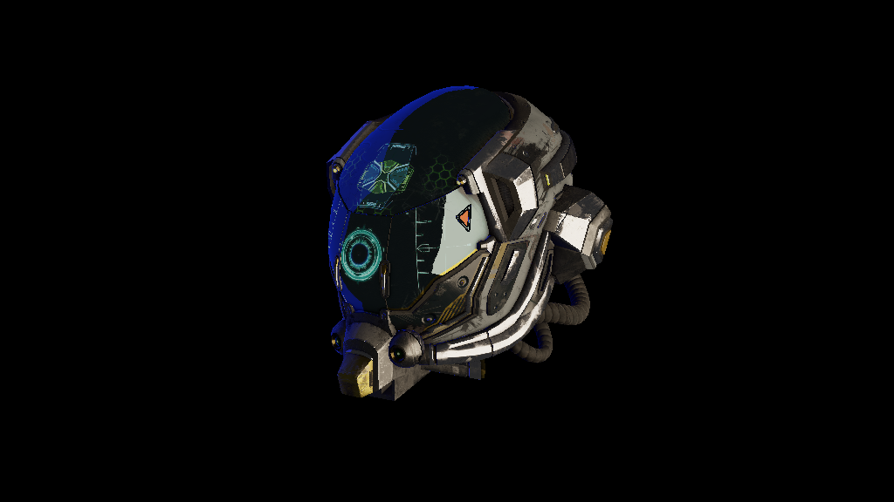

ZigCPURasterizer
Introduction
ZigCPURasterizer is a CPU software rasterizer written in Zig. I initially wrote it to study how a rasterizer work, and how GPU process input geometry into an image, and inner working of graphics pipeline from start to finish. It was later pushed to handle loading glTF scenes with textures and PBR lighitng.
To maximise learning, but minimize distraction, aside from these libraries everything else is written from scratch:
Forward Renderer
The project is 2-pass forward renderer. The first is an opaque pass, where all opaques geometries are rendered with full shading. The second is translucent pass, all translucent triangles are sorted back-to-front and rendered with alpha transparency and crude screen-space refraction. Two pass are added together to form final pass and then displayed on screen.



PBR Shading
Industry standard PBR shading model is implemented:
- BRDF: Cook-Torrence BRDF
- NDF: Trowbridge-Reitz GGX model
- Geometry Function: Smith's Schlick-GGX approximation
- Fresnel: Fresnel-Schlick approximation
It uses glTF's metallic-roughness workflow for PBR texturing.
Multiple Lights
Multiple lighting of different types is implemented:
- Directional / Sun Light
- Point Light
- Area Light: LTC Area Light from Real-Time Polygonal-Light Shading with Linearly Transformed Cosines.



Transmission Shading
Implementation is based on order-dependent transparency (sorted). Two framebuffers are used:
- Opaque: Only meshes with opaque materials are rendered.
- Translucent: Meshes with alpha-blending or transmission materials are rendered here. During this pass, the
Opaqueframebuffer is sampled as "background color" to create refraction effect. Triangles in this pass are first sorted back-to-front.
Both pass are composited before being displayed in the window.




- Opaque pass.
- Translucent pass without sampling
Opaquepass. - Translucent pass with sampling
Opaquepass (also results in depth-test against opaque objects). - Final composition.
SDR/HDR
The renderer follows a simple color pipeline:
- Texture (Stored; sRGB): Textures used by glTF are in
sRGBspace by default. - Texture (Loaded; Linear): Color Textures are converted to
linearspace; Normal maps to [-1, 1] space. - Render (Linear): All rendering process is done in
linearspace. - Export (sRGB):
- SDR
.png: Colors are tone-mapped (using a simple Reinhard operator) tosRGBspace. - HDR
.hdr: Colors are exported directly in linear space with no tone-mapping.
- SDR


- Left: SDR
.png - Right: HDR
.avif(converted from.hdrwith ffmpeg).
If you can't see image on right, then maybe your browser doesn't support
.avif. If colors are either off/muted or same as image on left, then maybe your monitor doesn't displays in HDR range.
GLTF
Following .gltf file features are supported:
- Scenes
- Meshes
- UVs
- Tangents
- Normals
- Images
- color
- metallic_roughness
- emissive
- transmission
- occlusion
- Materials
- metallic_roughness
- emissive_factor
- transmission_factor
- ior
- alpha_mode
- Camera
- khr_lights_punctual
- khr_materials_emissive_strength
- khr_materials_ior
- khr_materials_transmission
Because area lights aren't natively supported by glTF spec., a mesh with 4 vertices, name starting with arealight_ and an emissive material is treated as area light. The light is pointed in direction of mesh's normal and is assumed to be single-sided.
Tangents and Normals are dynamically calculated from the mesh if they are missing from the .gltf files.


Performance
Measurements taken on an M3 Pro (Single Threaded, 1024 x 576):
| Scene | Time (ms) |
|---|---|
| Lumberyard's Bistro (Exterior) | 2,126 ms |
| Lumberyard's Bistro (Interior) | 2,554 ms |
| Junk Shop | 2,458 ms |
| Tavern (cam 1) | 588 ms |
| Tavern (cam 2) | 676 ms |
| Knight | 49 ms |
Scene Statistics:
| Scene | Opaque Tris | Translucent Tris | Area Light | Point Light | Directional Light |
|---|---|---|---|---|---|
| Lumberyard's Bistro (Exterior) | 17,91,975 | 1,507 | 0 | 72 | 1 |
| Lumberyard's Bistro (Interior) | 4,53,134 | 26,151 | 0 | 72 | 1 |
| Junk Shop | 29,63,742 | 7,196 | 11 | 20 | 0 |
| Tavern (cam 1) | 1,21,980 | 2408 | 0 | 17 | 0 |
| Tavern (cam 2) | 88,617 | 2625 | 0 | 17 | 0 |
| Knight | 1,04,377 | 6 | 0 | 0 | 1 |
Future
Barely any optimization techniques are implemented. I want to push it as much as possible by implementing various graphics optimization techniques, before looking at tried-and-tested SIMD instructions and multi-threading.
I deliberately left out advanced graphical features (such as shadows, SSAO, IBL, and skeletal animation), to keep focus on core software rasterization pipeline. Since I have already implemented them in other graphics API projects, I am satisfied with visual quality so far achieved using just CPU.